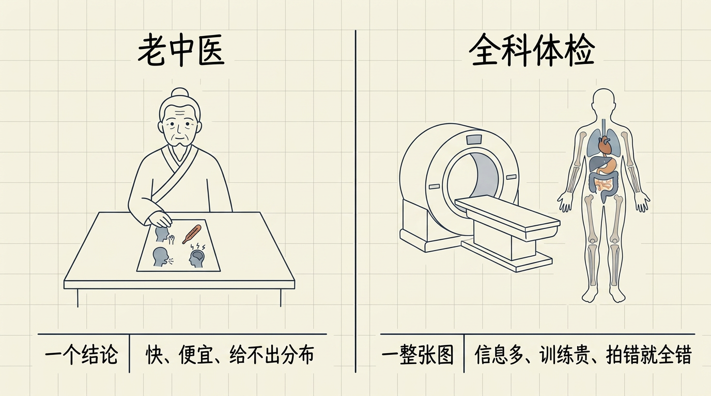
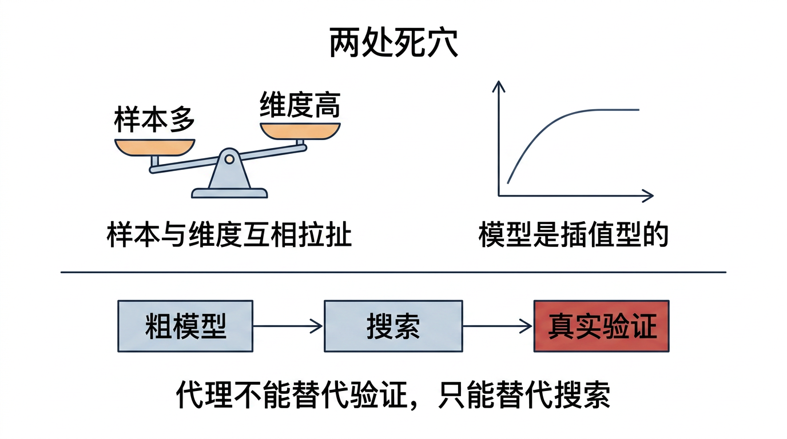
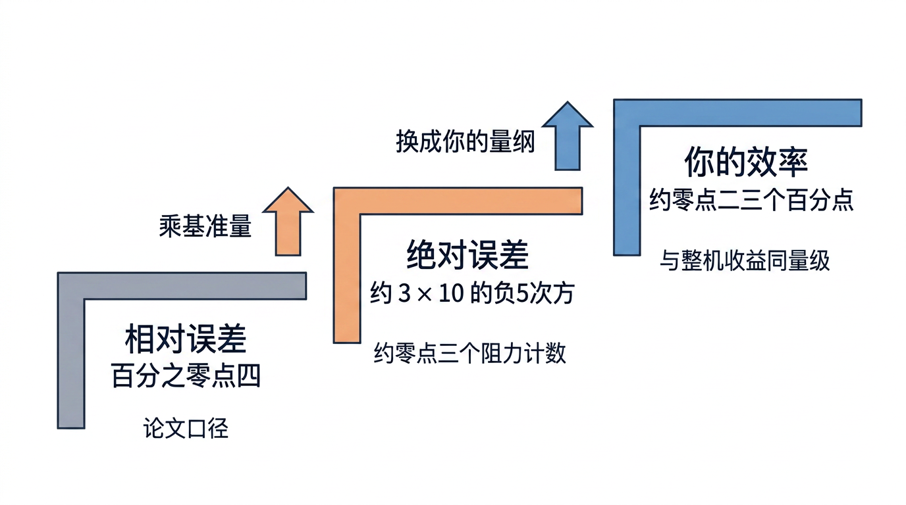
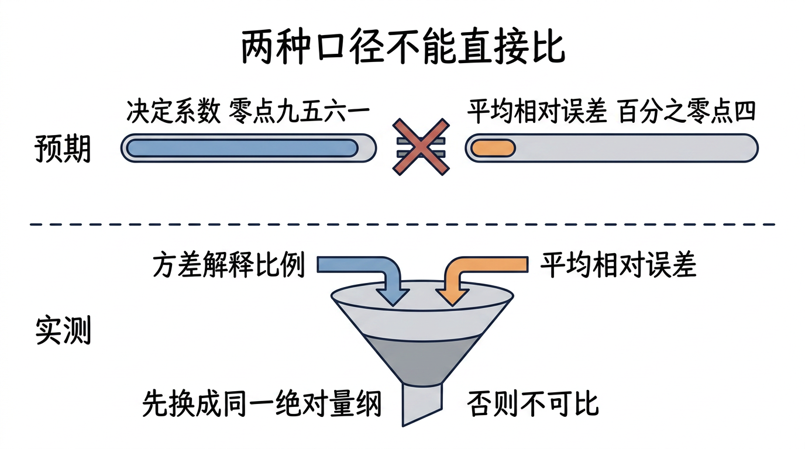
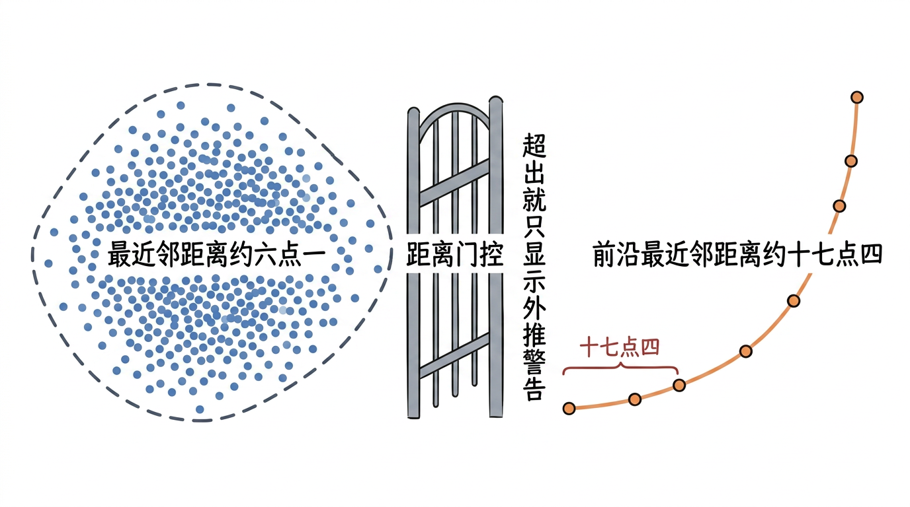
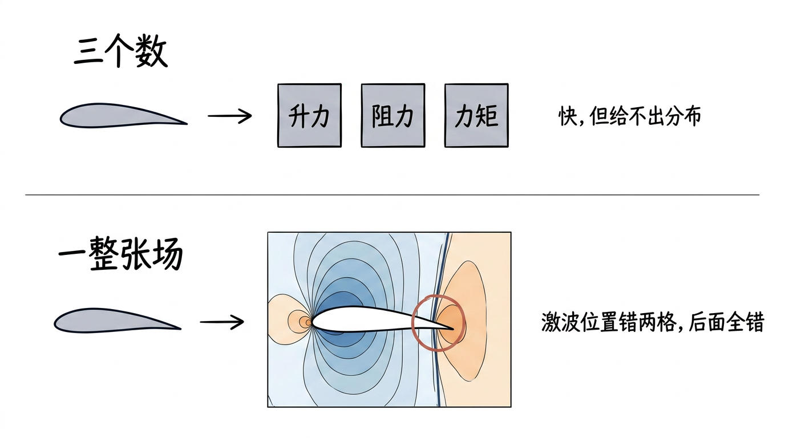
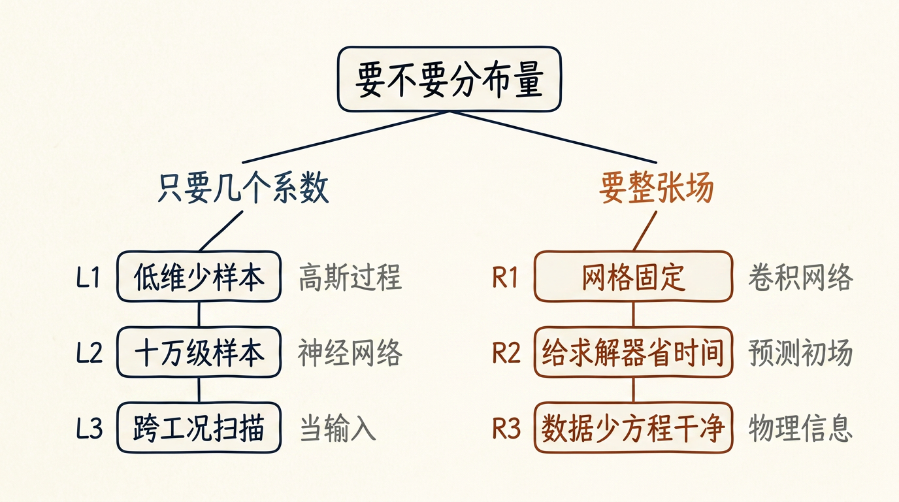
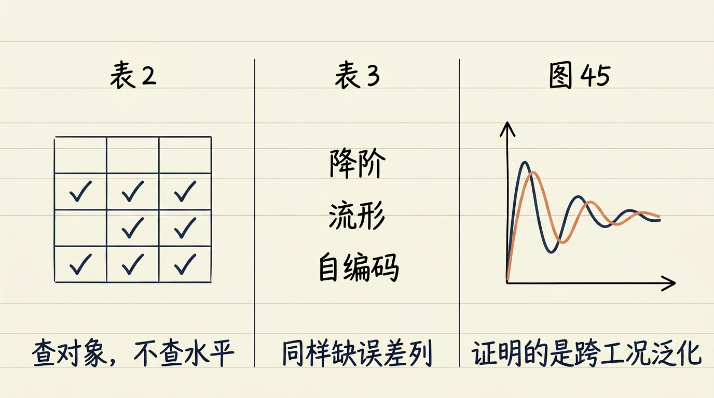
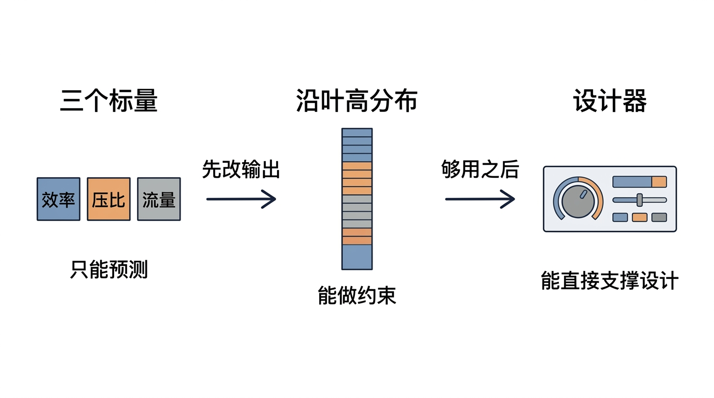
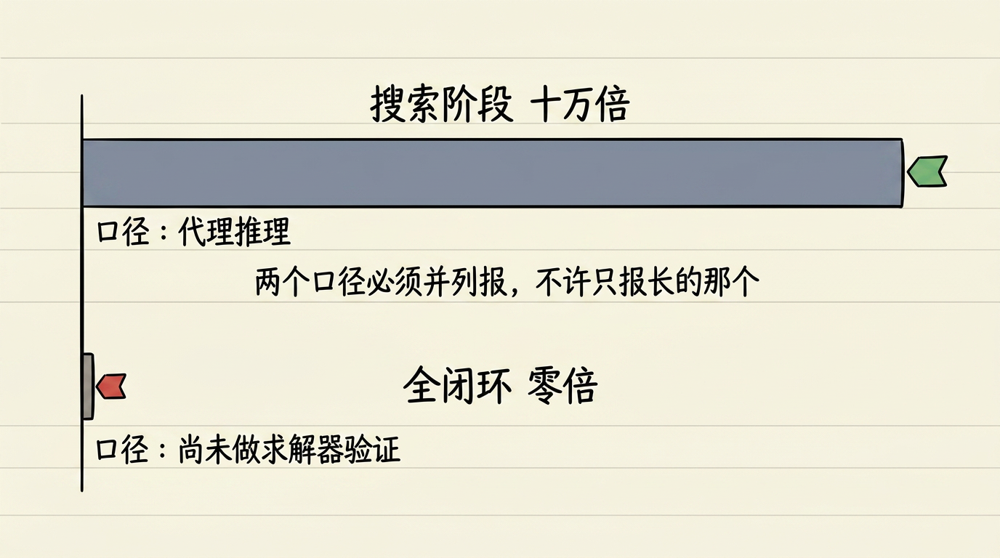

逐张看文字是否清晰不糊、中文是否有错字、结构是否与正文一致。发现问题的图，把 文件名 报给我，我单独重画。
（自检脚本无视觉能力，本页只能由人眼完成。）
| # | 图 | 位置 / 应表达的意思 |
|---|---|---|
| 1 |  | §3 场景引子 老中医 vs 全科体检：一个结论 vs 一整张图 L07v2_s1_tcm_ct_zh.png |
| 2 |  | §4 工程死穴 两处死穴：样本×维度拉扯 / 代理只能替代搜索，不能替代验证 L07v2_s2_two_deadlocks_zh.png |
| 3 |  | §5(b) 0.4% 三级台阶：相对→绝对 ~3×10⁻⁵≈0.3 counts→你的 η 量级 L07v2_s3_04pct_ladder_zh.png |
| 4 |  | §5(b) 👊 预期：两个百分数可直接比；实测：必须先换成同一绝对量纲 L07v2_s3_r2_trap_zh.png |
| 5 |  | §5/§10 外推门控：前沿最近邻 17.4 vs 训练云内部 6.1 L07v2_s3_extrapolation_zh.png |
| 6 |  | §5(c) 三个数 vs 一整张场：激波位置错两格，后面全错 L07v2_s3_field_vs_coeff_zh.png |
| 7 |  | §6 操作流 系数/流场选型决策树（先问要不要分布） L07v2_s4_decision_tree_zh.png |
| 8 |  | §7 数据与图表 Table 2 / Table 3 / Fig.45 读表三栏 L07v2_s5_table_reading_zh.png |
| 9 |  | §10 你的项目 平台升级：三个标量 → 沿叶高分布 → 设计器 L07v2_s8_platform_upgrade_zh.png |
| 10 |  | §10 你的项目 双口径并列：搜索 100,000×（E2）vs 全闭环 0×（E4） L07v2_s10_two_calibers_zh.png |